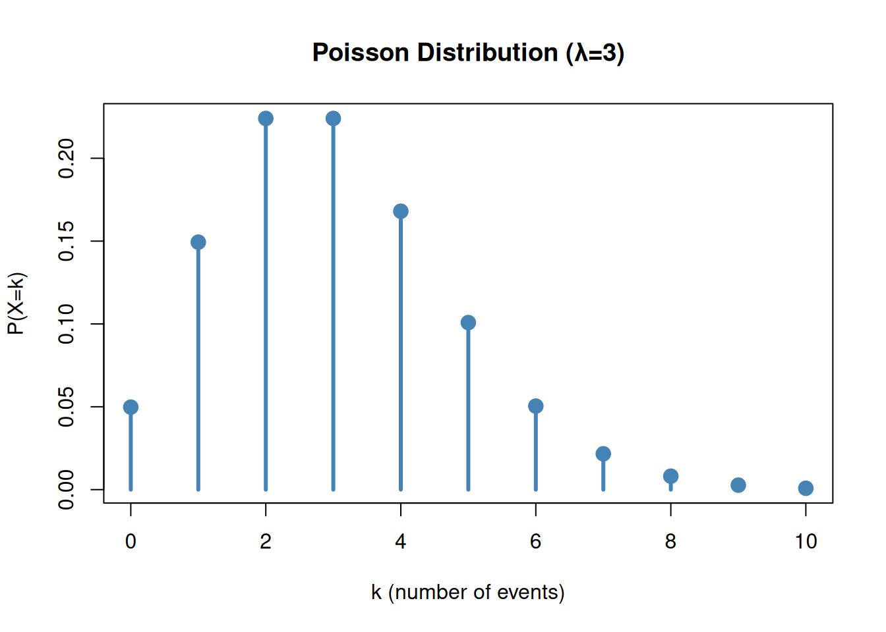
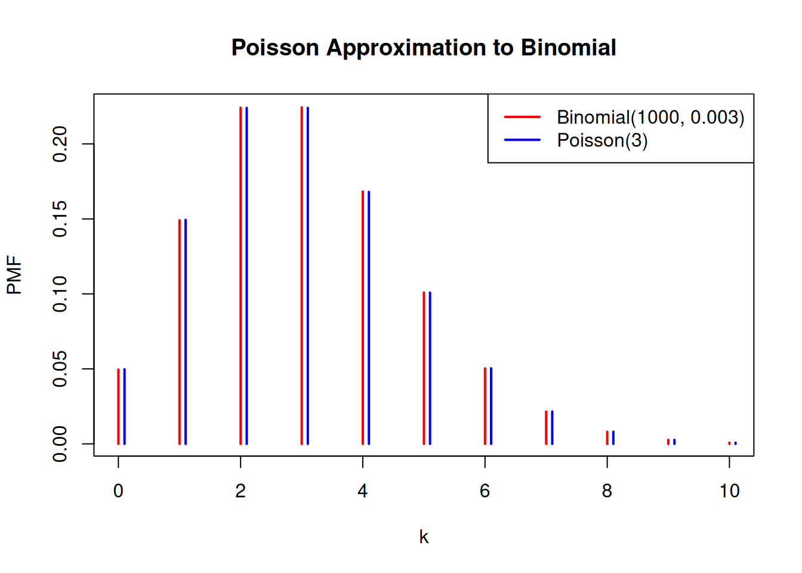
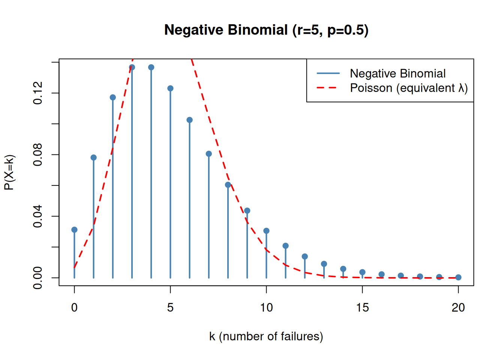

Discrete distributions describe random variables that take on a countable number of values (usually integers: 0, 1, 2, …). Unlike continuous distributions, they have probability mass functions (PMF) instead of probability density functions.
For Bayesian inference, discrete distributions are essential for: - Counting problems: Number of successes, defects, arrivals - Categorical data: Classification into categories - Prior specifications: Especially for count data - Likelihood functions: Often discrete for observed counts
The Bernoulli Distribution
Definition and Properties
Bernoulli Distribution
A Bernoulli trial is a random experiment with exactly two outcomes: success (probability \(p\)) or failure (probability \(1-p\)). The Bernoulli distribution describes a single trial.
The Poisson distribution models the number of events occurring in a fixed interval of time or space, when events occur at a constant average rate \(\lambda\) and independently of each other.
A unique property of the Poisson distribution is that the mean equals the variance, both equal to \(\lambda\). This is useful for checking if data are Poisson-distributed.
R Implementation
Show code
# Poisson distribution with rate λlambda <-3# PMF for various k valuesk_values <-0:10pmf <-dpois(k_values, lambda = lambda)# Plotplot(k_values, pmf, type ="h", lwd =3, col ="steelblue",xlab ="k (number of events)", ylab ="P(X=k)",main =paste("Poisson Distribution (λ=", lambda, ")", sep =""))points(k_values, pmf, pch =19, cex =1.5, col ="steelblue")

Show code
# Propertiescat("Mean:", lambda, "\n")
Mean: 3
Show code
cat("Variance:", lambda, "\n")
Variance: 3
Show code
cat("Mean = Variance:", lambda == lambda, "\n")
Mean = Variance: TRUE
Poisson vs Binomial
Show code
# When n is large and p is small such that np = λ,# Binomial(n,p) ≈ Poisson(λ)n <-1000p <-0.003lambda <- n * pk_values <-0:10# Compare distributionsbinomial_pmf <-dbinom(k_values, size = n, prob = p)poisson_pmf <-dpois(k_values, lambda = lambda)plot(k_values, binomial_pmf, type ="h", lwd =2, col ="red",xlab ="k", ylab ="PMF",main ="Poisson Approximation to Binomial")lines(k_values +0.1, poisson_pmf, type ="h", lwd =2, col ="blue")legend("topright", c("Binomial(1000, 0.003)", "Poisson(3)"),col =c("red", "blue"), lwd =2)

Example: Radioactive Decay
Bayesian Inference for Poisson Rate
A detector records radioactive decay events. In 10 experiments of 1 minute each, we observe: 8, 12, 7, 11, 9, 10, 8, 12, 6, 9 events
What is the posterior distribution of the decay rate λ?
Show code
# Data: number of events in each experimentdata <-c(8, 12, 7, 11, 9, 10, 8, 12, 6, 9)n_obs <-sum(data)n_experiments <-length(data)cat("Total events:", n_obs, "\n")
Total events: 92
Show code
cat("Total time (minutes):", n_experiments, "\n")
Total time (minutes): 10
Show code
# Prior: Exponential (λ_prior = 1), which is Gamma(1, 1)alpha_prior <-1beta_prior <-1# Posterior: Gamma distribution (conjugate prior)alpha_posterior <- alpha_prior + n_obsbeta_posterior <- beta_prior + n_experimentscat("\nPrior: Gamma(", alpha_prior, ",", beta_prior, ")\n")
The negative binomial distribution counts the number of failures before the r-th success in a sequence of independent Bernoulli trials with success probability p.
Alternative parameterization: Number of successes before r failures (more common in Bayesian contexts).
# Negative binomial: r successes, p probabilityr <-5p <-0.5# PMFk_values <-0:20pmf <-dnbinom(k_values, size = r, prob = p)plot(k_values, pmf, type ="h", lwd =2, col ="steelblue",xlab ="k (number of failures)", ylab ="P(X=k)",main =paste("Negative Binomial (r=", r, ", p=", p, ")", sep =""))points(k_values, pmf, pch =19, cex =1, col ="steelblue")# Compare with Poisson for referencelambda_equiv <- r * (1-p) / ppoisson_pmf <-dpois(k_values, lambda = lambda_equiv)lines(k_values, poisson_pmf, col ="red", lwd =2, lty =2)legend("topright", c("Negative Binomial", "Poisson (equivalent λ)"),col =c("steelblue", "red"), lwd =2, lty =c(1, 2))

Summary: When to Use Which Distribution
Distribution Selection Guide
Distribution
Use When
Example
Bernoulli
Single binary outcome
Coin flip, success/failure
Binomial
Count successes in n fixed trials
Defects in batch of 100 items
Poisson
Count events in time/space interval
Radiation events per minute
Negative Binomial
Count failures before r successes
Trials until 5th success
Key Question: What is the random variable? - Binary outcome → Bernoulli - Count from fixed number of trials → Binomial - Count in fixed interval → Poisson - “Waiting time” type problems → Negative Binomial
Conjugate Priors for Discrete Likelihoods
Conjugate Prior Reference
Likelihood
Conjugate Prior
Posterior
Bernoulli(\(p\))
Beta(\(\alpha\), \(\beta\))
Beta(\(\alpha + k\), \(\beta + n - k\))
Binomial(\(n\), \(p\))
Beta(\(\alpha\), \(\beta\))
Beta(\(\alpha + k\), \(\beta + n - k\))
Poisson(\(\lambda\))
Gamma(\(\alpha\), \(\beta\))
Gamma(\(\alpha + k\), \(\beta + n\))
Negative Binomial(\(r\), \(p\))
Beta(\(\alpha\), \(\beta\))
Beta(\(\alpha + r\), \(\beta + k\))
where \(k\) is the observed count and \(n\) is the number of trials.
Integration with MCMC
For more complex models, discrete parameters are often handled with:
Gibbs sampling: Efficient for discrete parameters with conjugate priors
Independence sampler: For discrete parameters with flexible priors
Slice sampling: Alternative for discrete variables
Mixed continuous-discrete models: MCMC methods that alternate between parameter types
See Chapters 29-31 for detailed MCMC methodology.
These discrete distributions are essential for practical Bayesian inference. Combined with the continuous distributions from Part II, they form the foundation for analyzing real-world data!
Source Code
---title: "Discrete Distributions & Bayesian Inference"---# Discrete Distributions & Bayesian Inference## Introduction to Discrete Distributions::: {.callout-note appearance="simple"}## Discrete DistributionsDiscrete distributions describe random variables that take on a countable number of values (usually integers: 0, 1, 2, ...). Unlike continuous distributions, they have probability mass functions (PMF) instead of probability density functions.:::For Bayesian inference, discrete distributions are essential for:- **Counting problems**: Number of successes, defects, arrivals- **Categorical data**: Classification into categories- **Prior specifications**: Especially for count data- **Likelihood functions**: Often discrete for observed counts## The Bernoulli Distribution### Definition and Properties::: {.callout-note appearance="simple"}## Bernoulli DistributionA Bernoulli trial is a random experiment with exactly two outcomes: success (probability $p$) or failure (probability $1-p$). The Bernoulli distribution describes a single trial.**Support**: $k \in \{0, 1\}$ **PMF**: $P(X = k \mid p) = p^k (1-p)^{1-k}$ **Mean**: $E[X] = p$ **Variance**: $\text{Var}(X) = p(1-p)$:::### R Implementation```{r}#| code-fold: true#| code-summary: "Show code"# Bernoulli distribution with p = 0.7p <-0.7# Probability mass functioncat("P(X=0):", (1-p), "\n")cat("P(X=1):", p, "\n")# Using dbinom with size=1dbinom(0, size =1, prob = p)dbinom(1, size =1, prob = p)# Sample from Bernoulliset.seed(42)samples <-rbinom(1000, size =1, prob = p)cat("Sample proportion of 1s:", mean(samples), "\n")cat("Theoretical p:", p, "\n")# Visualizationplot(c(0, 1), c(1-p, p), type ="h", xlim =c(-0.5, 1.5),ylim =c(0, 0.8), lwd =3, col ="steelblue",xlab ="k", ylab ="P(X=k)", main ="Bernoulli Distribution (p=0.7)")points(c(0, 1), c(1-p, p), pch =19, cex =2, col ="steelblue")```## The Binomial Distribution### Definition and Properties::: {.callout-note appearance="simple"}## Binomial DistributionThe binomial distribution describes the number of successes in $n$ independent Bernoulli trials, each with success probability $p$.**Support**: $k \in \{0, 1, \ldots, n\}$ **PMF**: $P(X = k \mid n, p) = \binom{n}{k} p^k (1-p)^{n-k}$ **Mean**: $E[X] = np$ **Variance**: $\text{Var}(X) = np(1-p)$:::### R Implementation```{r}#| code-fold: true#| code-summary: "Show code"# Binomial distribution: n trials, p probabilityn <-10p <-0.5# PMFk_values <-0:npmf <-dbinom(k_values, size = n, prob = p)# Plot PMFplot(k_values, pmf, type ="h", lwd =3, col ="steelblue",xlab ="k (number of successes)", ylab ="P(X=k)",main =paste("Binomial Distribution (n=", n, ", p=", p, ")", sep =""))points(k_values, pmf, pch =19, cex =1.5, col ="steelblue")# CDFcdf <-pbinom(k_values, size = n, prob = p)plot(k_values, cdf, type ="s", lwd =2, col ="darkred",xlab ="k", ylab ="P(X ≤ k)", main ="Cumulative Distribution Function")points(k_values, cdf, pch =19, cex =1, col ="darkred")```### Bayesian Inference: Estimating Probability::: {.callout-warning appearance="simple" collapse="true"}## Example: Coin FlippingSuppose we flip a coin 10 times and observe 7 heads. What is the posterior distribution of the probability of heads?```{r}#| code-fold: true#| code-summary: "Show code"# Datan_trials <-10n_successes <-7# Prior: Uniform (Beta(1,1))a_prior <-1b_prior <-1# Posterior: Beta distribution (conjugate prior)a_posterior <- a_prior + n_successesb_posterior <- b_prior + (n_trials - n_successes)cat("Prior: Beta(", a_prior, ",", b_prior, ")\n")cat("Data: ", n_successes, " successes in ", n_trials, " trials\n")cat("Posterior: Beta(", a_posterior, ",", b_posterior, ")\n\n")# Plot prior and posteriorp_grid <-seq(0, 1, length.out =1000)prior <-dbeta(p_grid, a_prior, b_prior)posterior <-dbeta(p_grid, a_posterior, b_posterior)likelihood <-dbinom(n_successes, n_trials, p_grid) *100# scale for visibilityplot(p_grid, prior, type ="l", col ="gray", lwd =2,xlab ="p (probability of heads)", ylab ="Density",main ="Coin Flip: Prior vs Posterior")lines(p_grid, likelihood, col ="orange", lwd =2)lines(p_grid, posterior, col ="steelblue", lwd =2)legend("topright", c("Prior", "Likelihood (scaled)", "Posterior"),col =c("gray", "orange", "steelblue"), lwd =2)# Summarycat("Posterior mean:", round(a_posterior / (a_posterior + b_posterior), 3), "\n")cat("Posterior 95% CI:", round(qbeta(c(0.025, 0.975), a_posterior, b_posterior), 3), "\n")```:::## The Poisson Distribution### Definition and Properties::: {.callout-note appearance="simple"}## Poisson DistributionThe Poisson distribution models the number of events occurring in a fixed interval of time or space, when events occur at a constant average rate $\lambda$ and independently of each other.**Support**: $k \in \{0, 1, 2, \ldots\}$ (non-negative integers) **PMF**: $P(X = k \mid \lambda) = \frac{\lambda^k e^{-\lambda}}{k!}$ **Mean**: $E[X] = \lambda$ **Variance**: $\text{Var}(X) = \lambda$:::### Key Property::: {.callout-tip appearance="simple"}## Mean Equals VarianceA unique property of the Poisson distribution is that the mean equals the variance, both equal to $\lambda$. This is useful for checking if data are Poisson-distributed.:::### R Implementation```{r}#| code-fold: true#| code-summary: "Show code"# Poisson distribution with rate λlambda <-3# PMF for various k valuesk_values <-0:10pmf <-dpois(k_values, lambda = lambda)# Plotplot(k_values, pmf, type ="h", lwd =3, col ="steelblue",xlab ="k (number of events)", ylab ="P(X=k)",main =paste("Poisson Distribution (λ=", lambda, ")", sep =""))points(k_values, pmf, pch =19, cex =1.5, col ="steelblue")# Propertiescat("Mean:", lambda, "\n")cat("Variance:", lambda, "\n")cat("Mean = Variance:", lambda == lambda, "\n")```### Poisson vs Binomial```{r}#| code-fold: true#| code-summary: "Show code"# When n is large and p is small such that np = λ,# Binomial(n,p) ≈ Poisson(λ)n <-1000p <-0.003lambda <- n * pk_values <-0:10# Compare distributionsbinomial_pmf <-dbinom(k_values, size = n, prob = p)poisson_pmf <-dpois(k_values, lambda = lambda)plot(k_values, binomial_pmf, type ="h", lwd =2, col ="red",xlab ="k", ylab ="PMF",main ="Poisson Approximation to Binomial")lines(k_values +0.1, poisson_pmf, type ="h", lwd =2, col ="blue")legend("topright", c("Binomial(1000, 0.003)", "Poisson(3)"),col =c("red", "blue"), lwd =2)```### Example: Radioactive Decay::: {.callout-warning appearance="simple" collapse="true"}## Bayesian Inference for Poisson RateA detector records radioactive decay events. In 10 experiments of 1 minute each, we observe:8, 12, 7, 11, 9, 10, 8, 12, 6, 9 eventsWhat is the posterior distribution of the decay rate λ?```{r}#| code-fold: true#| code-summary: "Show code"# Data: number of events in each experimentdata <-c(8, 12, 7, 11, 9, 10, 8, 12, 6, 9)n_obs <-sum(data)n_experiments <-length(data)cat("Total events:", n_obs, "\n")cat("Total time (minutes):", n_experiments, "\n")# Prior: Exponential (λ_prior = 1), which is Gamma(1, 1)alpha_prior <-1beta_prior <-1# Posterior: Gamma distribution (conjugate prior)alpha_posterior <- alpha_prior + n_obsbeta_posterior <- beta_prior + n_experimentscat("\nPrior: Gamma(", alpha_prior, ",", beta_prior, ")\n")cat("Posterior: Gamma(", alpha_posterior, ",", beta_posterior, ")\n\n")# Plotlambda_grid <-seq(0, 15, length.out =1000)prior <-dgamma(lambda_grid, shape = alpha_prior, rate = beta_prior)posterior <-dgamma(lambda_grid, shape = alpha_posterior, rate = beta_posterior)plot(lambda_grid, prior, type ="l", col ="gray", lwd =2,xlab ="λ (events per minute)", ylab ="Density",main ="Radioactive Decay: Prior vs Posterior")lines(lambda_grid, posterior, col ="steelblue", lwd =2)legend("topright", c("Prior Gamma(1,1)", "Posterior Gamma(48,10)"),col =c("gray", "steelblue"), lwd =2)# Summaryposterior_mean <- alpha_posterior / beta_posteriorposterior_sd <-sqrt(alpha_posterior) / beta_posteriorposterior_ci <-qgamma(c(0.025, 0.975), alpha_posterior, beta_posterior)cat("Posterior mean:", round(posterior_mean, 3), "\n")cat("Posterior SD:", round(posterior_sd, 3), "\n")cat("95% CI:", round(posterior_ci, 3), "\n")```:::## The Negative Binomial Distribution### Definition and Properties::: {.callout-note appearance="simple"}## Negative Binomial DistributionThe negative binomial distribution counts the number of failures before the r-th success in a sequence of independent Bernoulli trials with success probability p.**Alternative parameterization**: Number of successes before r failures (more common in Bayesian contexts).**Support**: $k \in \{0, 1, 2, \ldots\}$ **Mean**: $E[X] = \frac{r(1-p)}{p}$ (failures parameterization) **Variance**: Higher than Poisson (useful for overdispersed count data):::### R Implementation```{r}#| code-fold: true#| code-summary: "Show code"# Negative binomial: r successes, p probabilityr <-5p <-0.5# PMFk_values <-0:20pmf <-dnbinom(k_values, size = r, prob = p)plot(k_values, pmf, type ="h", lwd =2, col ="steelblue",xlab ="k (number of failures)", ylab ="P(X=k)",main =paste("Negative Binomial (r=", r, ", p=", p, ")", sep =""))points(k_values, pmf, pch =19, cex =1, col ="steelblue")# Compare with Poisson for referencelambda_equiv <- r * (1-p) / ppoisson_pmf <-dpois(k_values, lambda = lambda_equiv)lines(k_values, poisson_pmf, col ="red", lwd =2, lty =2)legend("topright", c("Negative Binomial", "Poisson (equivalent λ)"),col =c("steelblue", "red"), lwd =2, lty =c(1, 2))```## Summary: When to Use Which Distribution::: {.callout-note appearance="simple"}## Distribution Selection Guide| Distribution | Use When | Example ||---|---|---|| **Bernoulli** | Single binary outcome | Coin flip, success/failure || **Binomial** | Count successes in n fixed trials | Defects in batch of 100 items || **Poisson** | Count events in time/space interval | Radiation events per minute || **Negative Binomial** | Count failures before r successes | Trials until 5th success |**Key Question**: What is the random variable?- **Binary outcome** → Bernoulli- **Count from fixed number of trials** → Binomial- **Count in fixed interval** → Poisson- **"Waiting time" type problems** → Negative Binomial:::## Conjugate Priors for Discrete Likelihoods::: {.callout-warning appearance="simple" collapse="true"}## Conjugate Prior Reference| Likelihood | Conjugate Prior | Posterior ||---|---|---|| Bernoulli($p$) | Beta($\alpha$, $\beta$) | Beta($\alpha + k$, $\beta + n - k$) || Binomial($n$, $p$) | Beta($\alpha$, $\beta$) | Beta($\alpha + k$, $\beta + n - k$) || Poisson($\lambda$) | Gamma($\alpha$, $\beta$) | Gamma($\alpha + k$, $\beta + n$) || Negative Binomial($r$, $p$) | Beta($\alpha$, $\beta$) | Beta($\alpha + r$, $\beta + k$) |where $k$ is the observed count and $n$ is the number of trials.:::## Integration with MCMCFor more complex models, discrete parameters are often handled with:- **Gibbs sampling**: Efficient for discrete parameters with conjugate priors- **Independence sampler**: For discrete parameters with flexible priors- **Slice sampling**: Alternative for discrete variables- **Mixed continuous-discrete models**: MCMC methods that alternate between parameter typesSee Chapters 29-31 for detailed MCMC methodology.---**These discrete distributions are essential for practical Bayesian inference.** Combined with the continuous distributions from Part II, they form the foundation for analyzing real-world data!